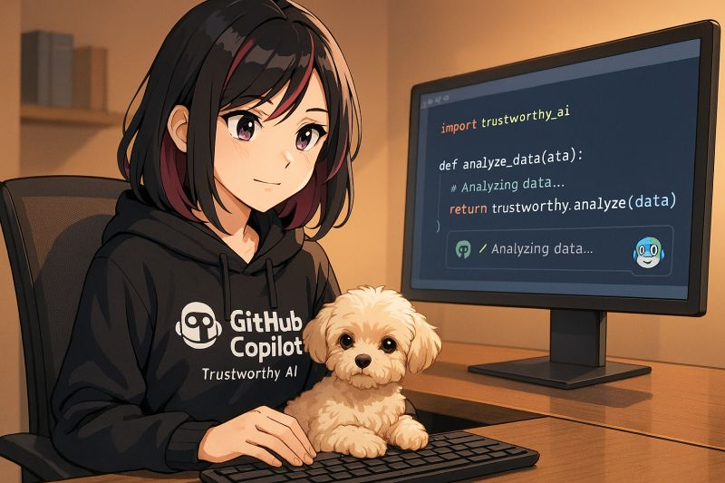

Guardrails: Security, Privacy & Enterprise Governance
The Reality Check: Moving to Production
ByteStrike's decoder works. It's fast. It's got retry logic and error handling. Great! Now The League's Chief Information Security Officer (CISO) has a question:
"Before we deploy this to production, I need to know: Is the data safe? Is it private? Can we audit who used it? What happens if something goes wrong?"
Welcome to the real world. Guardrails are the policies, checks, and safeguards that turn working code into trustworthy, enterprise-ready code. This part teaches you to think like a CISO, security engineer, and compliance officer: not to replace them, but to build with their concerns in mind from day one.
Learning Objectives
- Understand the four pillars of enterprise code: Security, Privacy, Governance, and Correctness
- Use Copilot to help implement guardrails (input validation, encryption, logging, access control)
- Recognize when to ask for human expertise (legal, compliance, architecture)
- Build a decoder that ByteStrike can ship with confidence
The Four Pillars of Enterprise Code
| Pillar | Question | Example Check |
|---|---|---|
| 🔒 Security | Can bad actors break this? | Validate URLs, sanitize regex, prevent code injection |
| 🔐 Privacy | Are secrets actually secrets? | Encrypt at rest, don't log secrets, mask in output |
| 📋 Governance | Can we audit and control usage? | Logging, access control, rate limits, alerts |
| ✅ Correctness | Does it actually work as intended? | Unit tests, integration tests, error handling |
Guardrails Checklist for ByteStrike's Decoder
Before shipping, check these:
🔒 Security
- ☐ Input validation: URLs are from an allowlist (not user-supplied arbitrary URLs)
- ☐ Timeout: Network requests timeout to prevent hangs
- ☐ Error messages: Don't expose internal paths, credentials, or system info
- ☐ Regex DoS: Ensure regex patterns can't be exploited to hang the system
- ☐ Dependencies: Are libraries up-to-date and from trusted sources?
🔐 Privacy
- ☐ Data minimization: Only fetch/extract what's needed
- ☐ Secret protection: Don't log, display, or cache secrets unnecessarily
- ☐ Encryption: Secrets in transit (HTTPS) and at rest (if stored)
- ☐ Retention: How long are secrets kept? (Auto-delete or expire?)
- ☐ User consent: If this touches personal data, has legal reviewed?
📋 Governance
- ☐ Audit logging: Who ran it, when, with what inputs, and what happened
- ☐ Access control: Only authorized users/services can call the decoder
- ☐ Rate limits: Prevent abuse (e.g., max 10 requests per minute per user)
- ☐ Alerts: Critical failures trigger notifications
- ☐ Documentation: How to run it, what it does, when to use it, when NOT to use it
✅ Correctness
- ☐ Unit tests: Basic functionality (happy path, errors, edge cases)
- ☐ Integration tests: Works with real remote blueprints
- ☐ Error scenarios: What happens on network failure, timeout, malformed input?
- ☐ Type safety: Use type hints/strong types to prevent runtime surprises
- ☐ Code review: A human has read and approved the code
Lab 4 Working Code (Starting Point for Lab 5)
This is the decoder you built in Lab 4, complete with retry logic and exponential backoff. Use this as your starting point for Lab 5. Your task is to add guardrails (security, privacy, governance, correctness) to this working foundation.
import requests
import re
import time
import logging
logging.basicConfig(level=logging.INFO, format='%(asctime)s %(levelname)s %(message)s')
MAX_RETRIES = 3
BASE_DELAY = 1 # seconds
def retrieve_and_decode_blueprint(blueprint_url: str) -> None:
"""Retrieve a blueprint URL and print extracted secrets. Retries up to 3 times."""
last_error = None
for attempt in range(1, MAX_RETRIES + 1):
try:
response = requests.get(blueprint_url, timeout=10)
response.raise_for_status()
secrets = re.findall(r"\{\*(.*?)\*\}", response.text)
for idx, secret in enumerate(secrets, 1):
print(f"Secret #{idx}: {secret.strip()}")
return
except (requests.ConnectionError, requests.Timeout) as e:
last_error = e
wait = BASE_DELAY * (2 ** (attempt - 1))
logging.warning(f"Attempt {attempt}/{MAX_RETRIES} failed: {e}. Retrying in {wait}s...")
time.sleep(wait)
logging.error(f"All {MAX_RETRIES} attempts failed. Last error: {last_error}")
if __name__ == "__main__":
blueprint_url = "https://raw.githubusercontent.com/microsoft/CopilotAdventures/main/Data/scrolls.txt"
retrieve_and_decode_blueprint(blueprint_url)
const MAX_RETRIES = 3;
const BASE_DELAY_MS = 1000;
async function retrieveAndDecodeBlueprint(url) {
let lastError;
for (let attempt = 1; attempt <= MAX_RETRIES; attempt++) {
try {
const controller = new AbortController();
const timer = setTimeout(() => controller.abort(), 10000);
const response = await fetch(url, { signal: controller.signal });
clearTimeout(timer);
if (!response.ok) throw new Error(`HTTP ${response.status}`);
const text = await response.text();
[...text.matchAll(/\{\*(.*?)\*\}/g)].forEach((m, i) =>
console.log(`Secret #${i + 1}: ${m[1].trim()}`)
);
return;
} catch (err) {
lastError = err;
const wait = BASE_DELAY_MS * Math.pow(2, attempt - 1);
console.warn(`Attempt ${attempt}/${MAX_RETRIES} failed: ${err.message}. Retrying in ${wait}ms...`);
await new Promise(r => setTimeout(r, wait));
}
}
console.error(`All ${MAX_RETRIES} attempts failed. Last error: ${lastError?.message}`);
}
const blueprintUrl = "https://raw.githubusercontent.com/microsoft/CopilotAdventures/main/Data/scrolls.txt";
retrieveAndDecodeBlueprint(blueprintUrl).catch(err => {
console.error(`Mission failed: ${err.message}`);
process.exit(1);
});
using System;
using System.Net.Http;
using System.Text.RegularExpressions;
using System.Threading.Tasks;
public class LeagueHQ
{
private static readonly HttpClient _client = new() { Timeout = TimeSpan.FromSeconds(10) };
private static readonly Regex _pattern = new(@"\{\*(.*?)\*\}", RegexOptions.Compiled);
private const int MaxRetries = 3;
private static async Task RetrieveAndDecodeBlueprint(string url)
{
Exception? lastError = null;
for (int attempt = 1; attempt <= MaxRetries; attempt++)
{
try
{
var content = await _client.GetStringAsync(url);
var matches = _pattern.Matches(content);
for (int i = 0; i < matches.Count; i++)
Console.WriteLine($"Secret #{i + 1}: {matches[i].Groups[1].Value.Trim()}");
return;
}
catch (HttpRequestException e)
{
lastError = e;
int wait = (int)Math.Pow(2, attempt - 1);
Console.Error.WriteLine($"Attempt {attempt}/{MaxRetries} failed: {e.Message}. Retrying in {wait}s...");
await Task.Delay(wait * 1000);
}
}
Console.Error.WriteLine($"All {MaxRetries} attempts failed. Last error: {lastError?.Message}");
}
public static async Task Main()
{
const string blueprintUrl = "https://raw.githubusercontent.com/microsoft/CopilotAdventures/main/Data/scrolls.txt";
await RetrieveAndDecodeBlueprint(blueprintUrl);
}
}
Lab 5: Harden ByteStrike's Decoder
Your Starting Point: Use the "Lab 4 Working Code" shown above as your foundation. It includes retry logic and basic error handling, but lacks security, privacy, governance, and correctness guardrails.
Your Goal: Add guardrails to this working decoder using Copilot Chat. Treat it as an exercise in applying the four pillars (Security, Privacy, Governance, Correctness) to real code.
Task 1: Audit the Basic Version
- Look at the basic decoder from Part 4. Ask yourself (or Copilot Chat): "What could go wrong?"
- List 5 potential issues across Security, Privacy, Governance, and Correctness.
- Rank them by risk (highest to lowest).
Task 2: Implement Guardrails with Chat Mode
- Input validation: Ask Copilot Chat: "Add URL validation using an allowlist. Only allow specific League sources."
- Logging: Ask: "Add audit logging that records when the decoder runs, but never logs secrets themselves."
- Error handling: Ask: "Improve error messages so they don't leak internal details (no stack traces in output)."
- Type hints/strong typing: Ask: "Add full type hints (Python) / strong types (C#) to prevent runtime surprises."
Task 3: Test the Hardened Version
- Write unit tests that verify:
- Valid URLs succeed
- Invalid URLs are blocked
- Secrets are extracted correctly
- Secrets are not logged
- Timeout works
- Run the tests and ensure they pass.
- Ask Copilot Chat: "What edge cases am I missing in my tests?"
Task 4: Governance & Documentation
- Create a
GUARDRAILS.mdfile documenting:- Security measures (URL allowlist, input validation, timeout)
- Privacy protections (what's logged, what's encrypted, retention)
- Governance (audit logging, access control, rate limits)
- Correctness (test coverage, error handling)
- Ask Copilot: "Generate guardrails documentation for a production decoder."
- Include a checklist that your team can use before deployment.
Reference: Hardened Decoder Solutions for Comparison
After completing Lab 5, compare your hardened decoder to these reference implementations. They address all four pillars and align with GitHub's security best practices.
import requests
import re
import logging
from typing import List
from urllib.parse import urlparse
import hashlib
# Configure secure logging (don't log secrets)
logging.basicConfig(level=logging.INFO)
logger = logging.getLogger(__name__)
# Allowlist of safe blueprint URLs
ALLOWED_BLUEPRINT_SOURCES = {
"https://raw.githubusercontent.com/microsoft/CopilotAdventures/main/Data/scrolls.txt"
}
def validate_url(url: str) -> bool:
"""Validate that URL is in the allowlist."""
return url in ALLOWED_BLUEPRINT_SOURCES
def extract_secrets(content: str, marker_start: str = "{*", marker_end: str = "*}") -> List[str]:
"""
Extract secrets safely from content.
Returns a list of secrets without logging their content.
"""
pattern = re.escape(marker_start) + r"(.*?)" + re.escape(marker_end)
secrets = re.findall(pattern, content, re.DOTALL)
logger.info(f"Extracted {len(secrets)} secrets") # Log count, not content
return secrets
def retrieve_and_decode_blueprint(blueprint_url: str, timeout: int = 10) -> None:
"""
Securely retrieve and decode a League blueprint.
Logs all activity for audit purposes.
"""
# 1. Validate input
if not validate_url(blueprint_url):
logger.error(f"Unauthorized blueprint source (blocklisted)")
raise ValueError("Blueprint source not authorized")
# 2. Audit log
logger.info(f"User initiated blueprint decode (hash: {hashlib.md5(blueprint_url.encode()).hexdigest()[:8]})")
try:
# 3. Fetch with timeout
response = requests.get(blueprint_url, timeout=timeout)
response.raise_for_status()
# 4. Extract secrets securely
secrets = extract_secrets(response.text)
# 5. Audit success
logger.info(f"Blueprint decode succeeded")
# 6. Output (mask secrets in logs, show to user only)
print("=== LEAGUE MISSION REPORT (AUTHORIZED ACCESS) ===")
if secrets:
for idx, secret in enumerate(secrets, 1):
# Show to user, but log only count
print(f"Secret #{idx}: {secret.strip()}")
else:
print("No secrets found.")
except requests.exceptions.Timeout:
logger.error("Blueprint fetch timeout (possible DoS or network issue)")
raise
except requests.exceptions.RequestException as e:
logger.error(f"Blueprint fetch failed: {type(e).__name__}")
raise
except Exception as e:
logger.error(f"Unexpected error during decode: {type(e).__name__}")
raise
if __name__ == "__main__":
blueprint_url = "https://raw.githubusercontent.com/microsoft/CopilotAdventures/main/Data/scrolls.txt"
retrieve_and_decode_blueprint(blueprint_url)
// Secure League Blueprint Decoder with Guardrails
const https = require('https');
const url = require('url');
const crypto = require('crypto');
// Configure secure logging
const logger = {
info: (msg) => console.log(`[INFO] ${new Date().toISOString()} ${msg}`),
error: (msg) => console.error(`[ERROR] ${new Date().toISOString()} ${msg}`),
};
// Allowlist of safe sources
const ALLOWED_SOURCES = new Set([
"https://raw.githubusercontent.com/microsoft/CopilotAdventures/main/Data/scrolls.txt"
]);
function validateUrl(urlString) {
if (!ALLOWED_SOURCES.has(urlString)) {
logger.error("Unauthorized blueprint source");
throw new Error("Blueprint source not authorized");
}
return true;
}
function extractSecrets(content, markerStart = "{*", markerEnd = "*}") {
const escapedStart = markerStart.replace(/[.*+?^${}()|[\]\\]/g, '\\$&');
const escapedEnd = markerEnd.replace(/[.*+?^${}()|[\]\\]/g, '\\$&');
const pattern = new RegExp(escapedStart + "(.*?)" + escapedEnd, "gs");
const secrets = [];
let match;
while ((match = pattern.exec(content)) !== null) {
secrets.push(match[1].trim());
}
logger.info(`Extracted ${secrets.length} secrets`); // Log count, not content
return secrets;
}
async function retrieveAndDecodeBlueprint(blueprintUrl, timeout = 10000) {
// 1. Validate
validateUrl(blueprintUrl);
// 2. Audit log
const hash = crypto.createHash('md5').update(blueprintUrl).digest('hex').substring(0, 8);
logger.info(`User initiated blueprint decode (hash: ${hash})`);
return new Promise((resolve, reject) => {
const controller = new AbortController();
const timeoutId = setTimeout(() => controller.abort(), timeout);
try {
https.get(blueprintUrl, { signal: controller.signal }, (response) => {
if (response.statusCode !== 200) {
logger.error(`Blueprint fetch failed: HTTP ${response.statusCode}`);
reject(new Error(`HTTP ${response.statusCode}`));
return;
}
let data = '';
response.on('data', chunk => { data += chunk; });
response.on('end', () => {
try {
const secrets = extractSecrets(data);
logger.info("Blueprint decode succeeded");
console.log("=== LEAGUE MISSION REPORT (AUTHORIZED ACCESS) ===");
if (secrets.length) {
secrets.forEach((s, i) => console.log(`Secret #${i + 1}: ${s}`));
} else {
console.log("No secrets found.");
}
resolve();
} catch (e) {
logger.error(`Parse error: ${e.message}`);
reject(e);
}
});
}).on('error', (err) => {
logger.error(`Network error: ${err.message}`);
reject(err);
});
} finally {
clearTimeout(timeoutId);
}
});
}
// Run
const blueprintUrl = "https://raw.githubusercontent.com/microsoft/CopilotAdventures/main/Data/scrolls.txt";
retrieveAndDecodeBlueprint(blueprintUrl)
.catch(err => {
logger.error(`Mission failed: ${err.message}`);
process.exit(1);
});
using System;
using System.Net.Http;
using System.Text.RegularExpressions;
using System.Collections.Generic;
using System.Linq;
using System.Security.Cryptography;
using System.Text;
public class SecureLeagueHQ
{
private static readonly HashSet AllowedSources = new()
{
"https://raw.githubusercontent.com/microsoft/CopilotAdventures/main/Data/scrolls.txt"
};
private static void LogInfo(string message)
=> Console.WriteLine($"[INFO] {DateTime.UtcNow:O} {message}");
private static void LogError(string message)
=> Console.Error.WriteLine($"[ERROR] {DateTime.UtcNow:O} {message}");
private static bool ValidateUrl(string blueprintUrl)
{
if (!AllowedSources.Contains(blueprintUrl))
{
LogError("Unauthorized blueprint source");
throw new ArgumentException("Blueprint source not authorized");
}
return true;
}
private static List ExtractSecrets(string content, string markerStart = "{*", string markerEnd = "*}")
{
var pattern = Regex.Escape(markerStart) + "(.*?)" + Regex.Escape(markerEnd);
var regex = new Regex(pattern, RegexOptions.Singleline);
var matches = regex.Matches(content);
var secrets = matches.Cast()
.Select(m => m.Groups[1].Value.Trim())
.ToList();
LogInfo($"Extracted {secrets.Count} secrets");
return secrets;
}
private static async Task RetrieveAndDecodeBlueprint(string blueprintUrl, int timeoutMs = 10000)
{
// 1. Validate
ValidateUrl(blueprintUrl);
// 2. Audit log
using var md5 = MD5.Create();
var hash = BitConverter.ToString(md5.ComputeHash(Encoding.UTF8.GetBytes(blueprintUrl)))
.Replace("-", "").Substring(0, 8);
LogInfo($"User initiated blueprint decode (hash: {hash})");
try
{
using var httpClient = new HttpClient(new SocketsHttpHandler())
{
Timeout = TimeSpan.FromMilliseconds(timeoutMs)
};
var blueprintContent = await httpClient.GetStringAsync(blueprintUrl);
var secrets = ExtractSecrets(blueprintContent);
LogInfo("Blueprint decode succeeded");
Console.WriteLine("=== LEAGUE MISSION REPORT (AUTHORIZED ACCESS) ===");
if (secrets.Count > 0)
{
for (int i = 0; i < secrets.Count; i++)
{
Console.WriteLine($"Secret #{i + 1}: {secrets[i]}");
}
}
else
{
Console.WriteLine("No secrets found.");
}
}
catch (HttpRequestException ex)
{
LogError($"Network error: {ex.Message}");
throw;
}
catch (TaskCanceledException)
{
LogError("Blueprint fetch timeout (possible DoS or network issue)");
throw;
}
catch (Exception ex)
{
LogError($"Unexpected error: {ex.GetType().Name}");
throw;
}
}
public static async Task Main()
{
const string blueprintUrl = "https://raw.githubusercontent.com/microsoft/CopilotAdventures/main/Data/scrolls.txt";
await RetrieveAndDecodeBlueprint(blueprintUrl);
}
}
Key Principle: Security by Design, Not Afterthought
The best time to think about guardrails is before you write the first line of code. ByteStrike's team succeeds by:
- 🔒 Validating all inputs (never trust user input)
- 🔐 Protecting secrets (encrypt, don't log, minimize exposure)
- 📋 Enabling audits (log activity, not secrets)
- ✅ Testing thoroughly (happy path AND failure scenarios)
- 👥 Involving domain experts (security, legal, compliance) early
GitHub's Built-In Security & Governance Platform
While writing secure code is essential, ByteStrike's team also leverages GitHub's holistic platform features to enforce guardrails across the entire development lifecycle. Here's an overview of key capabilities:
🔐 Secret Protection & Code Security
- Secret Scanning: Automatically detects credentials, API keys, and tokens accidentally committed to repositories, and alerts you before they cause damage.
Learn more about secret scanning → - Code Scanning (with GitHub Advanced Security): Integrates SAST (Static Application Security Testing) to identify vulnerabilities in your code before merge.
Learn more about code scanning → - Dependency Scanning: Alerts you to known vulnerabilities in your dependencies with automated fix suggestions.
Learn more about dependency scanning →
🛂 Access Control & Governance
- Branch Protection Rules: Enforce code review requirements, require status checks to pass, and restrict who can merge—ensuring no code reaches production without approval.
Learn more about branch protection → - CODEOWNERS: Automatically assign code reviews to domain experts based on file patterns, ensuring security, privacy, and compliance experts review relevant changes.
Learn more about CODEOWNERS → - Role-Based Access Control (RBAC): Define granular permissions for team members across repositories, organizations, and enterprise levels.
Learn more about RBAC → - Audit Logs: Track all actions in your organization—who made what change, when, and why—for compliance and forensics.
Learn more about audit logs →
✅ Compliance & Standards
- GitHub Advanced Security (GHAS): Comprehensive suite including code scanning, secret scanning, and supply chain security, designed to meet enterprise compliance requirements.
Learn more about GHAS → - Compliance Certifications: GitHub maintains SOC 2, ISO 27001, FedRAMP, HIPAA, and other certifications to support your organization's compliance obligations.
View GitHub's compliance certifications → - Data Residency & Sovereignty: Choose data residency options to meet GDPR, CCPA, and regional data protection requirements.
Learn more about GitHub privacy →
🔍 Privacy & Data Protection
- Two-Factor Authentication (2FA): Enforce 2FA organization-wide to protect against credential compromise.
Learn more about 2FA →
🚀 Supply Chain Security
- Software Supply Chain Security: Detect and respond to vulnerabilities in dependencies, and verify the integrity of artifacts.
Learn more about supply chain security → - Signed Commits: Require commits to be signed with GPG to prove they came from you, not an imposter.
Learn more about commit verification →
Key Takeaway: Secure code + secure platform = defense in depth. ByteStrike's team doesn't just write guardrails into their decoder—they also use GitHub's platform features to enforce guardrails across their entire development workflow. This layered approach (code-level + platform-level + organizational policies) is what makes systems production-ready.
Next up: Part 6 shows you how to deploy ByteStrike's decoder safely to production with governance, testing, documentation, and enterprise workflows.